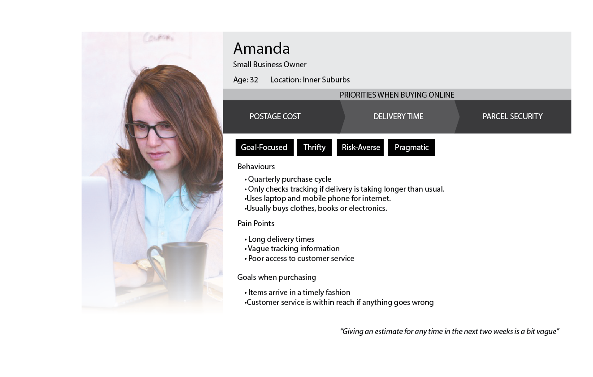

Using the information I gathered, I developed a problem statement synthesized from feedback and interviews, created a persona and mocked up some low-fidelity wireframes to illustrate a solution to issues customers may be facing.
While this is not a comprehensive project - and certain stages of the UX process were skipped - it was designed to give a top level demonstration of my UX skills and process, and how they can be of benefit to AusPost within the constraint of 24 hours.
People waiting for parcels are worried about overly long and vague delivery estimates, and aren’t satisfied with the customer service options they have tif they need to contact AusPost
I took the information I had gathered from the surveys and interviews and took common threads to create a persona
Add a feature to the existing mobile appwhich gives users easy access to simple, concise information and the option to contact a customer service representative via their preferred method if something should go wrong.
I then developed a set of wireframes to address user feedback, and create a product more suited to the users' needs. Users felt that the current post app was difficult to log into, so I made a more simple pin-based login screen, modelled of banking apps which manage to provide ease of access while retaining high security.
Another major concern that arose during the interviews, was that many users felt that if postage was taking too long they did not have adequate access to contact customer service, so I added a set of options for the users they could get in contact with someone to help.
Users were also given multiple options to add and store tracking numbers. By saving the tracking numbers in the app, they wouldn't have to enter the information manually each time they wanted to check the status of a parcel.